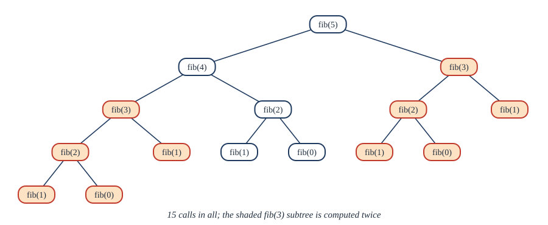

Chapter 6: Induction and Recursion¶
Proving statements about every natural number, and defining things in terms of themselves
Learning outcomes
After this chapter you should be able to:
- state the principle of mathematical induction and explain why it is valid;
- write complete proofs by induction of formulas, inequalities and divisibility statements, with a clearly stated basis step, inductive hypothesis and inductive step;
- use strong induction and the well-ordering principle, and say when each is the right tool;
- give recursive definitions of sequences, sets and functions, and prove properties of recursively defined sets by structural induction;
- write recursive algorithms, prove them correct by induction, and recognise when naive recursion is inefficient;
- use a loop invariant to prove that a loop computes what it should.
6.1 The principle of induction¶
Look at the sums of the first few odd numbers:
It seems that the sum of the first \(n\) odd numbers is \(n^2\). Checking more cases cannot prove it for all \(n\) (Section 3.8). But notice how each line follows from the one before: if \(1 + 3 + \dots + (2k - 1) = k^2\), then adding the next odd number, \(2k + 1\), gives \(k^2 + 2k + 1 = (k+1)^2\). So the truth of the formula for \(k\) pushes it on to \(k + 1\). Since it is true for \(1\), it is true for \(2\), hence for \(3\), hence for \(4\), and so on forever. That is mathematical induction.
The principle of mathematical induction
Let \(P(n)\) be a statement about the integer \(n\), and let \(b\) be an integer. Suppose
- Basis step: \(P(b)\) is true; and
- Inductive step: for every integer \(k \ge b\), if \(P(k)\) is true then \(P(k+1)\) is true.
Then \(P(n)\) is true for every integer \(n \ge b\).
In the inductive step the assumption "\(P(k)\) is true" is called the inductive hypothesis. We do not assume what we want to prove (that \(P(n)\) holds for all \(n\)); we assume it for one arbitrary \(k\) and show it then holds for \(k + 1\). In the notation of logic, induction is the rule of inference
The usual picture is an infinite row of dominoes. The basis step knocks over the first. The inductive step says that each domino, if it falls, knocks over the next. Together they knock over all of them; neither alone is enough.
Why induction is valid¶
Induction rests on a basic property of the natural numbers.
The well-ordering principle
Every non-empty set of natural numbers has a least element.
This is obviously true of finite sets, and for the natural numbers it is taken as an axiom. (It fails for the integers, which have no least element, and for the positive real numbers.) From it we can prove that induction works.
Proof of the principle of induction. Suppose the basis and inductive steps hold, but \(P(n)\) is false for some \(n \ge b\). Then the set \(S = \{n \ge b : P(n) \text{ is false}\}\) is non-empty, and (shifting by \(b\) to make it a set of natural numbers) it has a least element \(m\). Since \(P(b)\) is true, \(m \ne b\), so \(m > b\) and \(m - 1 \ge b\). Because \(m\) is the least element of \(S\), \(m - 1 \notin S\), so \(P(m-1)\) is true. By the inductive step with \(k = m - 1\), \(P(m)\) is true, contradicting \(m \in S\). \(\blacksquare\)
6.2 Proofs by induction¶
A proof by induction should always have the same visible structure. State \(P(n)\); prove the basis; state the inductive hypothesis; prove the inductive step, pointing to where the hypothesis is used; conclude.
Example 6.1: The sum of the first \(n\) odd numbers
Theorem. For every positive integer \(n\), \(1 + 3 + 5 + \dots + (2n - 1) = n^2\).
Proof. Let \(P(n)\) be the statement \(\sum_{i=1}^{n} (2i - 1) = n^2\).
Basis step. \(P(1)\) says \(1 = 1^2\), which is true.
Inductive step. Let \(k \ge 1\) and assume \(P(k)\): \(\sum_{i=1}^{k} (2i - 1) = k^2\). Then
where the second equality uses the inductive hypothesis. This is \(P(k+1)\).
By induction, \(P(n)\) holds for every \(n \ge 1\). \(\blacksquare\)
Example 6.2: A sum of squares
Theorem. For every positive integer \(n\), \(\displaystyle\sum_{i=1}^{n} i^2 = \frac{n(n+1)(2n+1)}{6}\).
Proof. Basis: for \(n = 1\), both sides equal \(1\). Inductive step: assume the formula for \(n = k\). Then
which is the formula with \(n = k + 1\), since \(2(k+1) + 1 = 2k + 3\). \(\blacksquare\)
Induction proves a formula you already have; it does not tell you how to find one. Formulas are found by guessing from small cases, by the methods of Chapter 9, or by cleverness such as Gauss's pairing in Section 4.9.
Example 6.3: An inequality
Theorem. \(2^n > n^2\) for every integer \(n \ge 5\).
Proof. Basis: \(2^5 = 32 > 25 = 5^2\). Inductive step: let \(k \ge 5\) and assume \(2^k > k^2\). Then
Here \(k^2 \ge 5k\) because \(k \ge 5\), and \(5k > 2k + 1\) because \(3k > 1\). \(\blacksquare\)
The basis is \(n = 5\) because the statement is false for \(n = 2, 3, 4\) (\(4 = 4\), \(8 < 9\), \(16 = 16\)). Induction can start anywhere.
Example 6.4: Divisibility
Theorem. For every natural number \(n\), \(3 \mid (n^3 - n)\).
Proof. Basis: \(0^3 - 0 = 0 = 3 \cdot 0\). Inductive step: assume \(3 \mid (k^3 - k)\). Then
The first term is divisible by 3 by the inductive hypothesis and the second is a multiple of 3, so the sum is divisible by 3. \(\blacksquare\)
Example 6.5: Subsets, by induction
Theorem. A set with \(n\) elements has \(2^n\) subsets.
Proof. Basis: the empty set has exactly one subset, itself, and \(2^0 = 1\). Inductive step: assume every set with \(k\) elements has \(2^k\) subsets, and let \(S\) have \(k + 1\) elements. Pick one element \(a \in S\) and let \(T = S - \{a\}\), which has \(k\) elements. Every subset of \(S\) either does not contain \(a\), in which case it is a subset of \(T\), or does contain \(a\), in which case it is \(X \cup \{a\}\) for exactly one subset \(X\) of \(T\). So \(S\) has \(2^k + 2^k = 2^{k+1}\) subsets. \(\blacksquare\)
A broken induction: all horses are the same colour
"Claim: in every set of \(n \ge 1\) horses, all horses are the same colour. Basis: one horse is the same colour as itself. Inductive step: given \(k + 1\) horses, remove the first; the remaining \(k\) are the same colour by hypothesis. Remove the last instead; those \(k\) are the same colour too. The two groups overlap, so all \(k + 1\) are the same colour."
The inductive step fails when \(k = 1\): with two horses, removing the first leaves one horse and removing the last leaves the other, and the two groups do not overlap. The step from \(k\) to \(k + 1\) must work for every \(k \ge b\), including the smallest.
6.3 Strong induction¶
Sometimes knowing \(P(k)\) is not enough to prove \(P(k+1)\), but knowing all of \(P(b), P(b+1), \dots, P(k)\) is.
The principle of strong induction
Suppose
- Basis step: \(P(b)\) is true; and
- Inductive step: for every \(k \ge b\), if \(P(b), P(b+1), \dots, P(k)\) are all true, then \(P(k+1)\) is true.
Then \(P(n)\) is true for every integer \(n \ge b\).
Strong induction is no stronger than ordinary induction (apply ordinary induction to the statement "\(P(b), \dots, P(n)\) are all true"), but it is often far more convenient.
Example 6.6: Every integer has a prime factorisation
Theorem. Every integer \(n \ge 2\) is a prime or a product of primes.
Proof. By strong induction on \(n\). Basis: \(2\) is prime. Inductive step: let \(k \ge 2\) and assume every integer \(m\) with \(2 \le m \le k\) is a prime or a product of primes. Consider \(k + 1\). If it is prime, we are done. Otherwise \(k + 1 = ab\) with \(2 \le a \le b \le k\). By the inductive hypothesis \(a\) and \(b\) are each a prime or a product of primes, so \(k + 1 = ab\) is a product of primes. \(\blacksquare\)
Ordinary induction would not work here: knowing about \(k\) says nothing useful about \(k + 1\), whose factors are much smaller. This theorem also fills the gap in the proof that there are infinitely many primes (Example 3.7): every integer greater than 1 has a prime divisor.
Example 6.7: Postage with 4 and 5 rupee stamps
Theorem. Every amount of \(n \ge 12\) rupees can be made exactly from 4-rupee and 5-rupee stamps.
Proof. By strong induction, with four basis cases. Basis: \(12 = 4+4+4\), \(13 = 4+4+5\), \(14 = 4+5+5\), \(15 = 5+5+5\). Inductive step: let \(k \ge 15\) and assume every amount from 12 to \(k\) can be made. Then \(k + 1 - 4 = k - 3\) lies between 12 and \(k\), so it can be made; add one 4-rupee stamp to make \(k + 1\). \(\blacksquare\)
The inductive step reaches back four places (\(k + 1\) from \(k - 3\)), so it needs four consecutive basis cases. (11 cannot be made, so 12 is the right starting point.)
The well-ordering principle as a proof method¶
The well-ordering principle can be used directly. To show that a property holds for all natural numbers, consider the least counterexample and derive a contradiction. As an example, here is the proof of a fact used in Chapter 10.
Theorem 6.1 (the division algorithm)
Let \(a\) be an integer and \(d\) a positive integer. There are unique integers \(q\) and \(r\) with \(a = dq + r\) and \(0 \le r < d\).
Proof. Existence. The set \(S = \{a - dq : q \in \mathbb{Z},\; a - dq \ge 0\}\) is a non-empty set of natural numbers (take \(q = -\lvert a \rvert\): then \(a - dq = a + d\lvert a \rvert \ge a + \lvert a \rvert \ge 0\)). By well-ordering it has a least element \(r = a - dq_0\). Then \(r \ge 0\). If \(r \ge d\), then \(r - d = a - d(q_0 + 1) \ge 0\) would be a smaller element of \(S\), a contradiction. So \(0 \le r < d\).
Uniqueness. If \(a = dq + r = dq' + r'\) with \(0 \le r, r' < d\), then \(d(q - q') = r' - r\), and \(-d < r' - r < d\). The only multiple of \(d\) strictly between \(-d\) and \(d\) is \(0\), so \(r = r'\) and \(q = q'\). \(\blacksquare\)
The integers \(q\) and \(r\) are the quotient and remainder; we write \(q = a \;\mathrm{div}\; d\) and \(r = a \bmod d\). For example, \(-11 = 4 \cdot (-3) + 1\), so \(-11 \;\mathrm{div}\; 4 = -3\) and \(-11 \bmod 4 = 1\). (Beware: some programming languages return \(-3\) for the remainder of \(-11\) divided by 4. Python's % agrees with the mathematical definition for a positive divisor.)
6.4 Recursive definitions¶
Induction proves things about every natural number; recursion defines things for every natural number, in the same two steps.
Recursively defined sequences and functions¶
A function on \(\mathbb{N}\) is defined recursively by giving its value at \(0\) (the basis) and a rule for finding its value at \(n + 1\) from earlier values (the recursive step).
- The factorial: \(0! = 1\) and \((n+1)! = (n+1) \cdot n!\). So \(4! = 4 \cdot 3! = 4 \cdot 3 \cdot 2! = \dots = 24\).
- Powers: \(a^0 = 1\) and \(a^{n+1} = a \cdot a^n\).
- The Fibonacci numbers: \(f_0 = 0\), \(f_1 = 1\), and \(f_n = f_{n-1} + f_{n-2}\) for \(n \ge 2\). They begin \(0, 1, 1, 2, 3, 5, 8, 13, 21, 34, 55, \dots\)
The Fibonacci recursion uses the two previous values, so properties of the Fibonacci numbers are naturally proved by strong induction.
Example 6.8: The Fibonacci numbers grow exponentially
Theorem. Let \(\alpha = (1 + \sqrt{5})/2 \approx 1.618\). Then \(f_n \ge \alpha^{n-2}\) for every \(n \ge 2\).
Proof. Note that \(\alpha\) is a root of \(x^2 = x + 1\) (check: \(\alpha^2 = (6 + 2\sqrt{5})/4 = (3 + \sqrt{5})/2 = \alpha + 1\)). Basis: \(f_2 = 1 = \alpha^0\), and \(f_3 = 2 > \alpha^1\). Inductive step: let \(k \ge 3\) and assume \(f_j \ge \alpha^{j-2}\) for \(2 \le j \le k\). Then
\(\blacksquare\) (Two basis cases are needed because the step uses the two previous values.)
Recursively defined sets and structural induction¶
Sets can be defined recursively too: give some starting elements, and rules that build new elements from old ones. The set contains exactly what can be built in finitely many steps.
Definition: strings over an alphabet
Let \(\Sigma\) be a finite set of symbols, an alphabet. The set \(\Sigma^{*}\) of strings over \(\Sigma\) is defined by: basis, the empty string \(\lambda\) is in \(\Sigma^{*}\); recursive step, if \(w \in \Sigma^{*}\) and \(x \in \Sigma\), then \(wx \in \Sigma^{*}\).
The length of a string is defined recursively on the same pattern: \(\ell(\lambda) = 0\) and \(\ell(wx) = \ell(w) + 1\). Strings are the raw material of Chapter 14.
Another example: the set \(B\) of balanced strings of parentheses is defined by basis, \(\lambda \in B\); recursive step, if \(u, v \in B\) then \((u)\) and \(uv\) are in \(B\). So \(()\), \(()()\), \((())\) and \((()())()\) are in \(B\), and \()(\) is not.
To prove that every element of a recursively defined set has a property, use structural induction: show that the starting elements have it, and that each rule produces an element with the property from elements that have it.
Example 6.9: Structural induction on balanced strings
Theorem. Every string in \(B\) has equally many left and right parentheses.
Proof. Let \(L(w)\) and \(R(w)\) be the numbers of left and right parentheses in \(w\). Basis: \(L(\lambda) = R(\lambda) = 0\). Recursive step: suppose \(L(u) = R(u)\) and \(L(v) = R(v)\). Then \(L((u)) = L(u) + 1 = R(u) + 1 = R((u))\), and \(L(uv) = L(u) + L(v) = R(u) + R(v) = R(uv)\). Since every element of \(B\) is built from \(\lambda\) by finitely many applications of the rules, every element has the property. \(\blacksquare\)
Structural induction is ordinary induction in disguise: it is induction on the number of rule applications used to build an element.
6.5 Recursive algorithms¶
An algorithm is recursive if it solves a problem by solving smaller instances of the same problem. Its correctness is proved by induction on the size of the input, following the recursion exactly.
def factorial(n):
if n == 0: # basis
return 1
return n * factorial(n - 1) # recursive step
def binary_search(a, x, lo, hi):
"""Return an index i with lo <= i <= hi and a[i] == x, or -1.
The list a must be sorted in increasing order."""
if lo > hi:
return -1
mid = (lo + hi) // 2
if a[mid] == x:
return mid
if a[mid] < x:
return binary_search(a, x, mid + 1, hi)
return binary_search(a, x, lo, mid - 1)
print(factorial(10)) # 3628800
print(binary_search([2, 3, 5, 7, 11, 13, 17], 11, 0, 6)) # 4
Example 6.10: Binary search is correct
Claim. If \(a\) is sorted, binary_search(a, x, lo, hi) returns an index of \(x\) in positions lo to hi if there is one, and \(-1\) otherwise.
Proof. By strong induction on the number of positions \(m = \text{hi} - \text{lo} + 1\). Basis: if \(m \le 0\), the range is empty and the function correctly returns \(-1\). Inductive step: suppose the claim holds for all ranges with fewer than \(m\) positions, where \(m \ge 1\). If \(a[\text{mid}] = x\), the answer is correct. If \(a[\text{mid}] < x\), then, because \(a\) is sorted, every position at or before mid holds a value less than \(x\), so \(x\) can only be in positions mid+1 to hi, a range with fewer than \(m\) positions; by the hypothesis the recursive call is correct. The case \(a[\text{mid}] > x\) is symmetric. \(\blacksquare\)
Each call of binary search halves the range, so a sorted list of \(n\) items needs only about \(\log_2 n\) comparisons: about 20 for a million items. Chapter 9 makes this precise with recurrence relations.
When recursion is wasteful¶
The Fibonacci definition translates directly into a recursive program, but the program is extremely slow. Figure 6.1 shows why: computing \(f_5\) computes \(f_3\) twice, \(f_2\) three times, and so on. The number of calls grows like the Fibonacci numbers themselves.

calls = 0
def fib(n):
global calls
calls += 1
if n < 2:
return n
return fib(n - 1) + fib(n - 2)
print(fib(30), calls)
def fib_iter(n):
a, b = 0, 1 # invariant: a = f(i), b = f(i+1)
for i in range(n):
a, b = b, a + b
return a
print(fib_iter(30), fib_iter(100))
832040 2692537
832040 354224848179261915075
The recursive version makes 2,692,537 calls to compute \(f_{30}\). (In general it makes \(2f_{n+1} - 1\) calls, which you can prove by strong induction.) The iterative version makes 30 passes through its loop, and computes \(f_{100}\) instantly.
6.6 Loop invariants¶
The comment in fib_iter above is a loop invariant: a statement about the program's variables that is true before the loop starts and remains true after each pass. Proving it is an induction on the number of passes.
Loop invariant method
To show that a loop is correct: (1) show that the invariant holds before the first pass; (2) show that if it holds before a pass, it holds after the pass; (3) show that when the loop stops, the invariant together with the stopping condition gives the result you want.
Example 6.11: The invariant of the Fibonacci loop
Claim. After \(i\) passes of the loop in fib_iter, \(a = f_i\) and \(b = f_{i+1}\).
Proof. Before any pass (\(i = 0\)), \(a = 0 = f_0\) and \(b = 1 = f_1\). If \(a = f_i\) and \(b = f_{i+1}\) before a pass, the pass sets \(a\) to \(f_{i+1}\) and \(b\) to \(f_i + f_{i+1} = f_{i+2}\), so the invariant holds with \(i + 1\). The loop stops after \(n\) passes, when \(a = f_n\), which the function returns. \(\blacksquare\)
6.7 Summary¶
Summary
- Induction: to prove \(P(n)\) for all \(n \ge b\), prove \(P(b)\) and prove that \(P(k)\) implies \(P(k+1)\) for every \(k \ge b\). It is valid because of the well-ordering principle.
- Write every induction proof with a visible basis, inductive hypothesis and inductive step, and say where the hypothesis is used. The step must work for every \(k \ge b\).
- Strong induction assumes \(P(b), \dots, P(k)\) to prove \(P(k+1)\). Use it when \(P(k+1)\) depends on cases further back (prime factorisation, Fibonacci, postage); give as many basis cases as the step reaches back.
- Recursive definitions give a basis and a rule for building new values or elements from old ones. Structural induction proves properties of recursively defined sets.
- A recursive algorithm is proved correct by induction on the size of its input. Naive recursion can repeat work exponentially often.
- A loop invariant is proved by induction on the number of passes.
6.8 Exercises¶
Exercise 1
Prove by induction that \(\sum_{i=1}^{n} i = n(n+1)/2\) for every \(n \ge 1\).
Answer
Basis: \(1 = 1 \cdot 2/2\). Step: if \(\sum_{i=1}^{k} i = k(k+1)/2\), then \(\sum_{i=1}^{k+1} i = k(k+1)/2 + (k+1) = (k+1)(k+2)/2\). \(\blacksquare\)
Exercise 2
Prove that \(\sum_{i=0}^{n} 2^i = 2^{n+1} - 1\) for every \(n \ge 0\).
Answer
Basis: \(2^0 = 1 = 2^1 - 1\). Step: \(\sum_{i=0}^{k+1} 2^i = (2^{k+1} - 1) + 2^{k+1} = 2^{k+2} - 1\). \(\blacksquare\)
Exercise 3
Prove that \(n! > 2^n\) for every \(n \ge 4\).
Answer
Basis: \(4! = 24 > 16\). Step: if \(k! > 2^k\) with \(k \ge 4\), then \((k+1)! = (k+1)k! > (k+1)2^k > 2 \cdot 2^k = 2^{k+1}\), since \(k + 1 > 2\). \(\blacksquare\)
Exercise 4
Prove that \(6 \mid (7^n - 1)\) for every \(n \ge 0\).
Answer
Basis: \(7^0 - 1 = 0\). Step: \(7^{k+1} - 1 = 7 \cdot 7^k - 7 + 6 = 7(7^k - 1) + 6\); both terms are divisible by 6, the first by the hypothesis. \(\blacksquare\)
Exercise 5
Prove that every amount of \(n \ge 8\) rupees can be paid with 3-rupee and 5-rupee coins.
Answer
Strong induction. Basis: \(8 = 3 + 5\), \(9 = 3+3+3\), \(10 = 5+5\). Step: for \(k \ge 10\), assume all amounts from 8 to \(k\) can be paid; then \(k + 1 - 3 = k - 2 \ge 8\) can be paid, and one more 3-rupee coin pays \(k + 1\). \(\blacksquare\)
Exercise 6
Prove that \(f_1 + f_2 + \dots + f_n = f_{n+2} - 1\) for the Fibonacci numbers, for every \(n \ge 1\).
Answer
Basis: \(f_1 = 1 = f_3 - 1 = 2 - 1\). Step: \(\sum_{i=1}^{k+1} f_i = (f_{k+2} - 1) + f_{k+1} = f_{k+3} - 1\), by the recurrence. \(\blacksquare\)
Exercise 7
What is wrong with this proof that \(2n = 0\) for all \(n \ge 0\)? "Basis: \(2 \cdot 0 = 0\). Step: assume \(2j = 0\) for all \(j \le k\). Write \(k + 1 = a + b\) with \(a, b \le k\). Then \(2(k+1) = 2a + 2b = 0 + 0 = 0\)."
Answer
The step fails for \(k = 0\). It must show \(2 \cdot 1 = 0\) by writing \(1 = a + b\) with \(a, b \le 0\); but the only natural number that is at most \(0\) is \(0\), and \(0 + 0 \ne 1\). Every later case depends on this one, so nothing is proved. (It is the same flaw as with the horses: the step must work for the smallest \(k\).)
Exercise 8
Define the set \(S\) recursively by \(3 \in S\), and if \(x, y \in S\) then \(x + y \in S\). Show that every element of \(S\) is divisible by 3. Is every positive multiple of 3 in \(S\)?
Answer
Structural induction: \(3\) is divisible by 3, and if \(3 \mid x\) and \(3 \mid y\) then \(3 \mid (x + y)\). Conversely, every positive multiple \(3n\) is in \(S\), by ordinary induction on \(n\): \(3 \in S\), and if \(3k \in S\) then \(3k + 3 \in S\). So \(S\) is exactly the set of positive multiples of 3.
Exercise 9
Give a recursive definition of the reversal \(w^R\) of a string \(w\) (for instance, \((abc)^R = cba\)), and of \(\mathrm{ones}(w)\), the number of 1s in a bit string \(w\).
Answer
\(\lambda^R = \lambda\) and \((wx)^R = x\,w^R\) for \(x \in \Sigma\). \(\mathrm{ones}(\lambda) = 0\), \(\mathrm{ones}(w0) = \mathrm{ones}(w)\), \(\mathrm{ones}(w1) = \mathrm{ones}(w) + 1\).
Exercise 10
State a loop invariant for this loop, which should compute \(x^n\), and use it to prove the loop correct: p = 1; for i in range(n): p = p * x.
Answer
Invariant: after \(i\) passes, \(p = x^i\). Before the loop \(p = 1 = x^0\). If \(p = x^i\) before a pass, then afterwards \(p = x^i \cdot x = x^{i+1}\). After \(n\) passes \(p = x^n\). \(\blacksquare\)
6.9 Quiz¶
Check your understanding of induction and recursion
Exercise 1
In the inductive step of a proof by induction you
- assume P(n) for all n
- assume P(k) and prove P(k+1)
- prove P(k) for many values of k
- assume P(k+1) and prove P(k)
Answer
assume P(k) and prove P(k+1)
Exercise 2
The validity of induction follows from
- the well-ordering principle
- the pigeonhole principle
- De Morgan's laws
- the division algorithm
Answer
the well-ordering principle
Exercise 3
What is 5 factorial?
Answer
120
Exercise 4
With f0 = 0 and f1 = 1, what is the Fibonacci number f10?
Answer
55
Exercise 5
Which method is the natural one for proving that every integer n ≥ 2 is a product of primes?
- ordinary induction
- strong induction
- a counterexample
- direct proof with no induction
Answer
strong induction
Exercise 6
What is -11 mod 4, using the mathematical definition of the remainder?
Answer
1
Exercise 7
The "all horses are the same colour" argument fails because
- the basis step is false
- the inductive step fails from k = 1 to k = 2
- induction cannot be used for horses
- the statement is true
Answer
the inductive step fails from k = 1 to k = 2